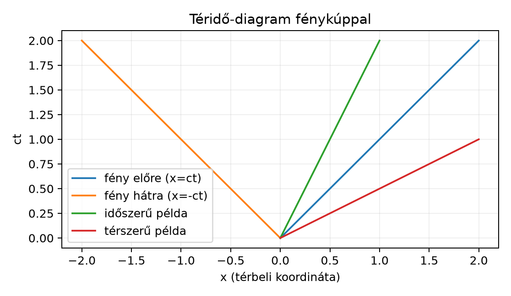

A geometriai algebra eddigi fejezeteiben a vektorok négyzete mindig
nemnegatív volt: egy vektor hosszának négyzetét adta. A speciális
relativitáselmélet azonban egy olyan geometriát használ, amelyben a
„hossznégyzet” lehet negatív vagy nulla is. Ennek oka a fénysebesség
állandósága: ha egy fénysugár a
pillanatban az origóból indul, akkor az
irányban terjedő fény helye
,
ahol
a fénysebesség. Az egyenletet átrendezve
és ez az összefüggás minden inerciarendszerben ugyanaz. A fénysugár
világvonala tehát egy olyan irány, amelynek a „négyzete” nulla, mégsem a
zérus vektorról van szó. Ezért olyan algebrára van szükségünk, amelyben
a vektor négyzete nem pozitív definit.
A Maxwell-egyenletek, a Lorentz-transzformációk és a relativisztikus
mechanika természetes nyelve éppen ez a téridő-algebra (spacetime
algebra, STA). Most felépítjük a bázisát, és megnézzük, hogyan
osztályozhatók a téridő vektorai.
19.1.2 Szemléletes kép: a
fénykúp
Rajzoljuk fel a téridő-diagramot úgy, hogy a függőleges tengelyre a
mennyiséget, a vízszintes tengelyre az
térbeli koordinátát mérjük. A fényszerű irányok az
és
egyenesek, vagyis a
-os
vonalak. A kúp belsejében haladó irányok az időszerűek, a kúpon kívüliek
a térszerűek.

Téridő-diagram fénykúppal - Sematikus
téridő-diagram c=1 egységekben; a 45°-os egyenesek a fénykúp, a
meredekebb egyenes időszerű, a laposabb térszerű irányt
jelöl.
Az ábrán a fénykúp határát a két
-os
egyenes adja. Az időszerű példa vonala a kúpon belül, a térszerű példáé
a kúpon kívül fut. Ezt az osztályozást a vektor négyzetének előjelével
fogjuk pontosan leírni.
19.1.3 Metrika és a kontrakciós
axióma módosítása
A Minkowski-tér (Minkowski spacetime) négydimenziós valós vektortér,
amelynek bázisa négy ortonormált vektor:
A korábbi euklideszi esettől eltérően a bázisvektorok négyzete nem
mind
,
hanem
Ezt a
szignatúrának nevezzük. A különböző bázisvektorok páronként
antikommutálnak:
Definíció. A téridő-algebra (STA) az a geometriai
algebra, amelyet a
ortonormált bázis generál, a fenti négyzetekkel és antikommutációs
szabállyal. A geometriai szorzat axiómái ugyanazok, mint az euklideszi
esetben, csak a kontrakciós axióma módosul: tetszőleges
téridő-vektorra
de a jobb oldal most már lehet negatív vagy nulla is.
Egy általános téridő-vektort a
alakban írunk, ahol
valós számok. A
és
bázisvektorok skalárszorzata a metrikus tenzor:
Azaz
,
,
a többi pedig nulla.
Számítsuk ki
-et
koordinátákkal. A geometriai szorzat disztributív, ezért
A vegyes tagok páronként kiejtik egymást, mert
esetén
A diagonális tagokban
,
így
Behelyettesítve a négyzeteket:
Ez éppen a Minkowski-féle téridő-intervallum,
egységekben. Ha vissza akarjuk tenni a fénysebességet, akkor
,
tehát a fizikai kifejezés
19.1.4 Időszerű, térszerű és
fényszerű vektor
A négyzet előjele három osztályba sorolja a nemzérus
téridő-vektorokat.
Definíció. Legyen
téridő-vektor.
Ha
,
akkor
időszerű (timelike).
Ha
,
akkor
térszerű (spacelike).
Ha
,
akkor
fényszerű (lightlike vagy null vector).
A fényszerű vektor tehát egy nemzérus, nulla négyzetű vektor. Ez a
lineáris algebrából ismert zérus vektortól különböző fogalom, ezért
óvatosan kell bánni a „nullvektor” szóval. A fényszerű vektor tipikus
példája a fény terjedési iránya:
,
mert
Az inverzképzés szempontjából a nulla négyzet kritikus. Az euklideszi
esetben a vektor inverze
volt. Ez a képlet csak akkor működik, ha
.
Tétel. Ha
fényszerű vektor, azaz
,
akkor
-nek
nincs geometriai inverze.
Bizonyítás. Tegyük fel, hogy létezik olyan
,
amelyre
.
Szorozzuk meg az egyenletet balról
-szel:
Mivel
,
a bal oldal nulla, tehát
.
Ez ellentmond a feltételnek, így
nem invertálható. Befejezésül: a jobbról való inverz esete ugyanígy
látható be.
19.1.5 Kidolgozott példa: három
vektor osztályozása
Legyenek adottak a következő téridő-vektorok:
Számítsuk ki a négyzetüket.
Az első vektorra:
A vegyes tagok
,
ezért
Mivel
,
a vektor időszerű.
A második vektorra:
Ez térszerű, mert
.
A harmadik vektorra:
Mivel
és
,
a vektor fényszerű, ezért nincs inverze.
19.1.6 A STA báziselemei: 16 elem
négy fokszámban
A G(3) algebrához hasonlóan a bázisvektorok szorzataiból új, magasabb
fokszámú báziselemek keletkeznek. Az STA négydimenziós, ezért a
báziselemek száma
.
Definíció. A
()
jelölést használjuk a bivektorokra,
a trivektorokra, és
a pszeudoskalárra.
A 16 báziselemet fokszám szerint csoportosítva:
Fokszám
Darab
Báziselemek
A bivektorok két, fizikailag is különböző csoportra oszlanak. Az
idő-tér bivektorok
,
a tér-tér bivektorok pedig
.
Nézzük meg a négyzetüket, mert a csoportok viselkedése eltér.
Először egy idő-tér bivektor, például
:
Mivel
,
átírhatjuk:
mert
.
Ezért
Az idő-tér bivektorok négyzete tehát
.
Most egy tér-tér bivektor, például
:
Itt
,
ezért
így
Tehát a tér-tér bivektorok négyzete
,
ugyanúgy, mint a G(3) bivektoroké. Ez a különbség később a
Lorentz-boost-ok és a térbeli forgatások eltérő szerkezetét fogja
magyarázni.
19.1.7 A pszeudoskalár:
Tétel. A STA pszeudoskalárjára
Bizonyítás. Írjuk be a definíciót:
Először vizsgáljuk meg a
szorzatot. A
-t
három antikommutációval visszük balra:
Ezért
Így
Most ki kell számítanunk
-et.
A
tényezőt külön kezeljük. A
ciklikus átrendezéssel:
Ezért
mert
.
Tehát
Végül
Ez az eredmény azért fontos, mert a G(3)-ban is
volt, tehát a pszeudoskalár négyzete itt is ugyanaz, annak ellenére,
hogy a metrika megváltozott. Figyeljünk azonban arra, hogy a STA-ban az
nem cserélhető fel minden elemmel: a négybázisú páros dimenziós algebra
pszeudoskalárja antikommutál a páratlan fokszámú elemekkel, például
.
A fényszerű vektor nem a zérus vektor. A
Minkowski-térben a nulla négyzetű, nemzérus vektorokat fényszerűnek
nevezzük. Ezért a „nullvektor” kifejezés félrevezető lehet, és a
fényszerű vektornak nincs inverze.
A térszerű bázisvektorok négyzete
.
A G(3)-ból érkező olvasó könnyen megszokja, hogy
.
A STA-ban
,
ezért a térbeli komponensek negatív előjellel járulnak a vektor
négyzetéhez. Emiatt
,
nem
,
bár az
végeredménye mégis
.
A bivektorok négyzete nem mindig
.
A tér-tér bivektoroké
,
az idő-tér bivektoroké viszont
.
Ha valaki minden bivektort egyformán kezel, a Lorentz-boost-ok
levezetésekor előjelhibát kap.
Szignatúra-konvenció. Sok fizikatankönyv a
szignatúrát használja, ahol az időszerű vektorok négyzete negatív, a
térszerűeké pozitív. Ebben a könyvben végig
a konvenció, de más források olvasásakor az előjeleket ellenőrizni
kell.
19.1.9 Feladatok
Fogalmi feladat. Osztályozzuk a következő
téridő-vektorokat:
,
,
,
.
Melyiknek van inverze, és melyiknek nincs?
Kézi számolás. Számítsuk ki a
vektor négyzetét, majd a
és
bivektorok négyzetét. Minden átrendezést írjunk le.
Levezetési feladat. Mutassuk meg, hogy a
elemekre
()
teljesül
.
(Ez a feladat előkészíti a következő alfejezetben bevezetett relatív
vektorokat.)
Alkalmazási feladat. Két esemény koordinátái egy
inerciarendszerben:
és
,
ahol a komponensek sorrendje
.
Állapítsuk meg, hogy lehet-e oksági kapcsolat a két esemény között, ha a
köztük lévő téridő-vektor időszerű vagy fényszerű.
19.1.10 Megoldások
Az
négyzete
,
tehát időszerű, inverze
(mert
).
A
négyzete
,
tehát térszerű, inverze
,
mert
.
A
négyzete
,
tehát fényszerű, nincs inverze. A
négyzete
,
tehát időszerű, inverze
.
A vektor négyzetét a diagonalizált képletből kapjuk:
A
bivektorra:
A
bivektorra:
Legyen
.
A négyzet:
Mivel
,
a középső
szorzatot átírva:
mert
.
Tehát
A két esemény közötti különbségvektor:
Ennek négyzete:
és az időkomponens
.
A különbségvektor tehát időszerű, így a két esemény között lehet oksági
kapcsolat.
19.1.11 Rövid összefoglaló
A téridő-algebra (STA) a Minkowski-metrikájú geometriai algebra. A
ortonormált bázisra
és
,
a különböző bázisvektorok antikommutálnak. Egy
téridő-vektor négyzete
.
Ez pozitív időszerű, negatív térszerű, nulla fényszerű vektor; a
fényszerű, nemzérus vektornak nincs inverze. Az STA báziselemei fokszám
szerint: 1 skalár, 4 vektor, 6 bivektor, 4 trivektor, 1 pszeudoskalár.
Az idő-tér bivektorok négyzete
,
a tér-tér bivektoroké
.
A pszeudoskalárra
és
.
Továbbvitt eredmény. A
bázis, a
értékek, a bivektorok két csoportja és az
tulajdonság a Téridő-felbontás: relatív vektorok és
a G(3) beágyazása, valamint a Lorentz-transzformációk mint rotorok alfejezetekben
alapozza meg a relatív vektorokat és a Lorentz-rotorokat; a
elemekre
.
19.1.12 Források és ellenőrzési
hiányok
Ez az alfejezet klasszikus, stabil matematikai és relativitáselméleti
eredményekre épít. A
szignatúra választása gyakori a téridő-algebrában, de a fizikai irodalom
egy része
konvenciót használ, ezért a források összevetésekor az előjeleket mindig
ellenőrizni kell. Hestenes, valamint Doran–Lasenby munkái standard
hivatkozások a téridő-algebra felépítéséhez, de pontos oldalszámokat,
idézeteket és fejezetszámokat nem állítok ellenőrzöttként; a bemutatott
levezetések a bázisvektorok antikommutációs szabályaiból közvetlenül
következnek.